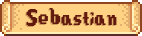
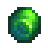
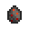
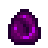
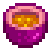
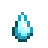

Stardew Valley is a farming simulator game developed by Concerned Ape! The wiki's description
reads...
Stardew Valley is an open-ended country-life RPG! You've inherited your grandfather's old farm
plot
in Stardew Valley. Armed with hand-me-down tools and a few coins, you set out to begin your new
life. Can you learn to live off the land and turn these overgrown fields into a thriving home?
It
won't be easy. Ever since Joja Corporation came to town, the old ways of life have all but
disappeared. The community center, once the town's most vibrant hub of activity, now lies in
shambles. But the valley seems full of opportunity. With a little dedication, you might just be
the
one to restore Stardew Valley to greatness![1]






Character Profile
Sebastian is one of the twelve bachelors in the game for you to marry. He lives in Robin and
Demetrius' household on the mountain. He also lives with his half-sister, Maru who he doesn't
really
get along with. This is one of the main componenets of his character and when you marry him and
decide to have kids, he expresses regrets about how he treated Maru and hopes that your kids can
get along better. He also likes frogs.
Sebastian is one of the younger bachelors in the game, along with Sam and Abigail. He is one of
the few villagers that is quite harsh to you when you start alking to him. He comes off as
disinterested or bothered, but as you start to befriend him he starts opening up about his
interests. I really enjoy his six heart event where he invites you to play Solarian
Chronicles (essentially SV DND). There's several outsomes to this campaign
depending on which options you pick.
Biography
Eric Barone (known as ConcernedApe online) developed Satrdew Valley by himself for 7
years[1]. When asked what his reason was for developing the
game
solo, he
responded by highlighting his perfectionism and also solitary nature. This can be seen in many
interviews with CA putting off releasing the game multiple times beleiving certain aspects could
be
better before release[2]. Eric only has formal training in
programming and had to practice every other
aspect of the game extensively. His main hobby besides programming was initially music[2].
Eric's story is an inspiration for indie game developers or anyone else pursuing their creative
passion. Motivation was a main component of his mindset when developing the game. While he was
developing the game solo, he was also being financially supported by his girlfriend which gave
him
more time to focus on the game. This served as one of the primary motivators for CA to make a
succesful game. Although, he states in many interviews that he never imagined his game would get
nearly as popular as it is.
Haunted Chocolatier
CA's new game, Haunted Chocolatier, started devlopment in 2020[1]. Eric is often pretty tight lipped when it comes to
discussing
the game in interviews, but he has divulged some details about his design philosophy. He states
that
he wants the game to succeed on its own merits instead of being seen as CA's second game or
Stardew
Valley 2[2]. Haunted Chocolatier will also have more
'intuitive' gameplay according to CA. He wants the systems of the game to contrast SV's
more mechanical systems. This has been a point of contention for some fans, but I'm extremly
excited to see what direction he goes with (even if I can't min-max).
I started playing Stardew Valley around 2021 and have put in 700+ hours over the years. This is one of my
favorite games OAT for a variety of reasons. The game is so incredibly addicting for me and I often have
to put off starting playthroughs until after a semester ends. Most of the time I've played vanilla but
recently I have been getting into modding, mostly quality of life mods and aethstetics Some of
my favorites include: Elle's
Seasonal Buildings, Automate, and Vanilla Tweaks.
To the right are some of the farms I've created over the years. I generally like to keep my farms pretty
organized but not always. What I really enjoy about the game is how much min-maxing potential it
has.
There are many aspects of the game that you can optimize and 'exploit' to get you heaps of cash
in the
first year. I personally usually try to get a fish smoker + bait maker asap and fish for Sturgeon or
Catfish depending on the season. I'm usually to busy trying to farm money that I don't end up decorating
until around Year 2 or 3. Decorating my house is my least favorite since much of the furniture in the
game deosn't really stand alone very well imo. This makes it most appealling to go full maximalist on
the interiors to fill up space and it's hard to do it in a way that doesn't feel messy.